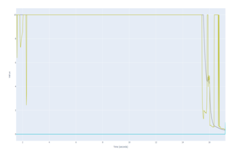

Advised by Dr. Jeffery Wishart · CARLA Simulator · NHTSA Pre-Crash Scenarios
The Scenario-Based Simulation Testing and Driving Assessment Metrics Validation framework uses the CARLA simulator to implement all 37 of NHTSA's pre-crash test cases, which account for approximately 97% of light-duty vehicle crashes. Scenarios are defined via CARLA's Python API, instantiating traffic actors, environmental conditions, and sensor models to emulate real-world situations with high fidelity.
My Contributions
- Scenario Database Development: Create a repository of NHTSA pre-crash scenarios, annotated with fidelity, relevance, and complexity scores to align with regulatory guidelines.
- Metric Standardization: Define and compute Driving Assessment (DA) metrics — Complexity, Relevance, Fidelity, Metric, and Severity — using the OSA methodology to provide consistent safety profiles across tests.
- Scenario Definition: Script each pre-crash case (e.g., rear-end, lane change) in CARLA to position vehicles, pedestrians, and environmental elements according to NHTSA specifications.
- Data Collection: Run multiple simulation iterations per scenario while logging vehicle states, sensor outputs, and event triggers (e.g., collision warnings) via CARLA's logging interface.
- Metric Computation: Calculate safety metrics — minimum clearance distance, collision incident counts, and response latency — using logged data and standardized formulas for safety assessment.

Key Safety Metrics
- Minimum Distance Safety Envelope (MDSE): Measures the closest distance maintained between the AV and other traffic participants during a scenario run.
- Operational Electronic Device Response (OEDR) Time: Captures latency from hazard detection (e.g., sudden braking of lead vehicle) to initiation of AV's corrective action.
- Collision Incident (CI) Count: Records the number of collisions or near-miss events per scenario iteration.
Results
Preliminary validation shows the framework can identify safety-critical behaviors — such as insufficient clearance or excessive response latency — and quantify performance degradations as scenario complexity increases. An external assessment tool demonstrated superior, fine-grained metrics compared to baseline simulator outputs, enabling actionable insights for AV developers. By reducing reliance on real-world testing by up to 97%, this methodology accelerates development cycles and enhances reproducibility in CAV safety validation.
🔒 NDA Notice: Having signed a non-disclosure agreement, I am unable to share further proprietary details about this project.